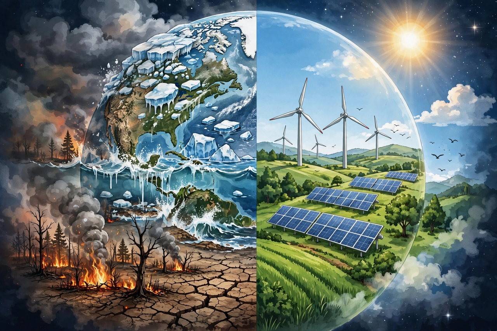

Climate change refers to long-term shifts in temperatures and weather patterns. Since the mid-20th century, human activities — principally burning fossil fuels such as coal, oil and gas — have been the main driver, increasing greenhouse gas concentrations and warming the planet.

| Causes | Greenhouse gas emissions, deforestation |
|---|---|
| Effects | Sea level rise, heatwaves, extreme weather |
| Key body | IPCC |
Carbon dioxide, methane and nitrous oxide trap heat in the atmosphere. Emissions come from energy, industry, transport, buildings and agriculture. Atmospheric CO2 has risen from about 280 parts per million pre-industrially to over 420 ppm.
Global surface temperature has risen about 1.1–1.2 °C since the late 19th century. Consequences include ocean warming and acidification, shrinking glaciers and ice sheets, sea level rise, and more intense heatwaves, droughts and heavy rainfall in many regions.
Risks affect food and water security, health, ecosystems and infrastructure, with vulnerable communities often hit hardest. Limiting warming to 1.5 °C, as aspired to in the 2015 Paris Agreement, reduces but does not eliminate risks.
Mitigation involves deep emissions cuts, renewable energy, efficiency and protecting carbon sinks; adaptation involves resilient infrastructure, early warning and ecosystem protection. The Intergovernmental Panel on Climate Change (IPCC) assesses the science in periodic reports.